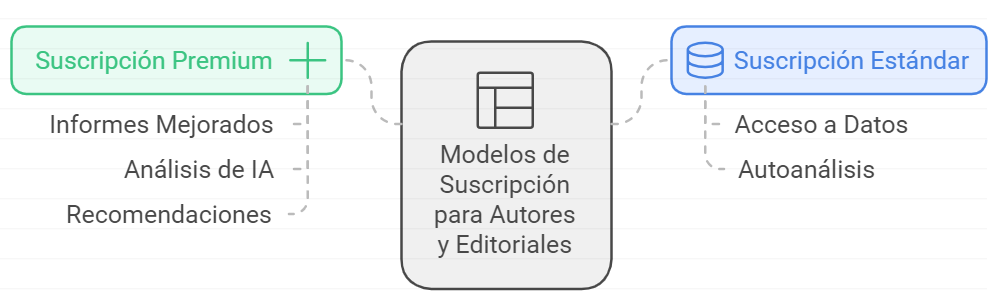
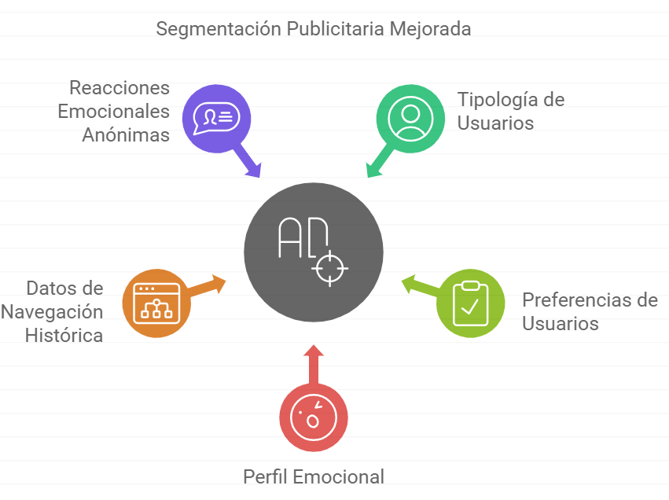

Mercado, Marketing e Ingresos / Otras vías de ingresos
Otras vías de ingresos
Introducción:
Al tratarse de un Modelo Marketplace, podemos aprovechar otras vías de ingreso de gran interés a parte de la venta de Stringbooks. Hablamos de publicidad, pero también de establecer modelos de suscripción tanto para lectores como autores/editoriales.
Detallamos estas fórmulas:
Modelo de Suscripción para Lectores
Se establecerá un Modelo de Suscripción especial donde el usuario,
pagando una cuota, tendrá derecho a una cantidad de Stringbooks al mes
. Para el control de descargas, se establecerá un máximo de descargas al mes, pero será el propio formato quien obligue a mantener la suscripción ya que no podrá ser consumido en otras plataformas que no sean Selbook.
Se presentarán dos modelos de suscripción, con un pago mensual/anual, el usuario podrá adquirir un número limitado de Stringbooks con diferentes niveles de Ampliaciones y Prestaciones. (Estudiar modelos y precios).
👤 Miembro Basic:
- Acceso a todo el catálogo pero en la versión Básica de cada Stringbook (limitadas en Ampliaciones y Prestaciones).
- Se pagarán de forma normal las ampliaciones y prestaciones que decidan adquirir.
- Beneficios extra:
- Acceso a preventa.
- Descuento por pago anual.
- Acumula puntos para futuras compras.
- Precios especiales en Fullpacks.
🏅 Miembro Premium:
- Acceso a todo el catálogo en versiones Full Experience.
- Beneficios extra:
- Acceso a preventa.
- Descuento por pago anual.
- Invitación a eventos y presentaciones.
- Precios especiales en Fullpacks.
- Acumula puntos para futuras compras.
Suscripción y Servicios a Autores y Editoriales
Del mismo modo y de forma similar a otros Marketplace, el lado de los vendedores existirá la posibilidad de Suscripción que le ofrecerá una serie de servicios y ventajas que no obtendrían como simples vendedores. Habrá que estudiar cómo paquetizar estos servicios, estudiar las prestaciones y valorar el precio de la suscrición de tal forma que a los autores y editores les sea interesante.

Ya hemos visto la mayoría de los servicios en la sección de Stringbooks y Autores. En base a estos, se podrían establecer dos modelos.
Leyenda: ✓ Servicio Común + Servicio Mejorado 🔥 Servicio Exclusivo Premium
🟢 Suscripción Estándar
La principal diferencia de este modelo es que la información ofrecida serán datos, dejando la parte de análisis y conclusiones al propio suscriptor. **Incluye Servicios Editoriales, sin la suscripción, si el autor quiere publicar el libro, o bien está pre-maquetado y editado y corregido (División de Coherencia), o deberán pagarse los costes de edición nativa.
- Datos de ventas instantáneasAcceso a ventas de Stringbooks, Ampliaciones y Prestaciones, con segmentaciones.
- Análisis de Nudos, Rutas y EmocionesAnálisis de rutas más leídas, decisiones más populares, emociones relacionadas, etc.
- Informes de Emociones y PerfilesInformación sobre la tipología de Perfiles de usuarios más afines a sus obras.
- Análisis de Dimensiones y Relatos AlternativosAnálisis completo de las dimensiones (protagonistas) más elegidas y "emocionales".
- Análisis de Banda Sonora y efectosConocer la percepción y gustos de los lectores sobre los componente sonoros.
- Análisis de Prestaciones y AmpliacionesAcceso a la venta, tendencias y preferencias de los lectores sobre estos extras.
- Landing Page de AutorSe creará una Landing Page de Autor, con información sobre sus obras y acceso a ellas.
- Cafetería de AutorEl autor podrá crear su propia Cafetería en La Comunidad.
- Servicios de PromociónSi el Autor es de sello Nativo, será la Organización Selbook quien se encargue de la promoción.
- Sistema de ActualizacionesPodrá crear actualizaciones, versiones y ediciones sobre las obras ya publicadas.
👑 Suscripción Premium
En el caso de la suscripción Premium, a parte de un mayor acceso a informes y análisis, también tendrán incluido la actuación de la IA (Sely) como analista de esa información y recomendación de mejoras, ampliaciones y obras futuras. A los servicios estándar, se suman:
- Análisis de Emociones y Perfiles con IAInferir qué tipo de obra futura tendría una alta posibilidad de éxito, con recomendaciones.
- Landing Page de Autor, Editorial y por ObraAdemás de la de Autor, una de Editorial y una Landing Page para cada Stringbook.
- Cafetería de Autor y/o ObraEl autor podrá pedir a Sely que administre y gestione el canal.
- Servicios de Promoción (Mejorados)Un paquete mejorado de promoción y visibilidad (listas de ventas, recomendaciones de Sely, etc.).
- Acceso al Archivo de Experiencias de los lectoresAcceso a la recopilación de Archivos de Experiencia de los lectores (anónimos).
- Propuestas Creativas de SelySely tendrá la capacidad de dar sugerencias muy optimizadas sobre la creación de futuras obras.
El acceso a los datos y análisis del Servicio Premium se acotan en los propios lectores de ese autor/editorial, pero habría que estudiar la opción de dar al servicio Premium acceso a toda la información y análisis emocional y de perfiles (guardando anonimato de los lectores) de todos los lectores. Esta opción seria extremadamente valiosa para que las editoriales y autores busquen opciones y planifiquen proyectos de una altísima posibilidad de éxito.
Financiación por vías publicitarias
Se habilitará la Publicidad en espacios externos al Stringbooks. Hablamos de La Comunidad, Publicidad en Redes Sociales del Selbook. Dejar claro que la experiencia narrativa del usuario jamás debería ser interrumpida por anuncios de ningún tipo, pero sí podrá existir técnicas de Product Placement (Emplazamiento Publicitario) en los contenidos multimedia generados.
Se desarrollarán dos vías de alojamientos publicitarios: Emplazamiento y Anuncios. Veamos ambas opciones:
Anuncios en La Comunidad
Consistirá en la publicación de anuncios en la red social del Selbook: La Comunidad. Un modelo tradicional que presenta un atractivo inigualable para las marcas ya que podrán aprovechar la segmentación de usuarios por tipología, gustos y... perfil emocional. Hoy en día la segmentación del Público Objetivo la basamos en la información recopilada por su historial de navegación, cookies, etc. Datos estadísticos basados en la experiencia de uso del usuario. Con el Selbook, añadimos a esto, la posibilidad de segmentar por el Perfil de Emocional del Usuario. Pero lo más valioso... Los anunciantes podrán tener la información (anónima) de cómo reaccionan emocionalmente los usuarios a sus anuncios.
Anuncios en Las Cafeterías
Recordemos que Las Cafeterías es un “Sub-espacio” dentro de La Comunidad basado en canales tipo Discord. Existirán cafeterías oficiales y privadas, creadas por los Usuarios. En estas cafeterías privadas, serán sus administradores quienes decidan si hay publicidad o no. En caso de aceptar publicidad, tendrán una comisión de intermediación, implicándoles así en la difusión y promoción de su canal.

Emplazamiento Publicitario
Este modelo deberá usarse con sutileza y sin abusar. Consistirá en la tradicional Publicidad Indirecta en escenas o situaciones narrativas. Existirán 2 modelos y el coste de la impresión dependerá de la cercanía a situaciones emocionales de interés.
Modelo Narrativo:
La publicidad estará integrada en el texto. Ejemplo:
Sin Emplazamiento Publicitario:
Tom se subió al coche. Estaba feliz y emocionado por lo que acababa de suceder con Sara.
CON Emplazamiento Publicitario:
Tom se subió al BMW. Estaba feliz y emocionado por lo que acababa de suceder con Sara.
Modelo Visual:
La publicidad se integrará en la generación de contenidos de Audiovisuales: Vídeos, Imágenes, videostory. Del mismo modo, se sustituirá el concepto genérico por la marca. Y cuanto más cercana y positiva sea la emoción generada, mayor será el coste por impresión.
🔥 Lo interesante de este modelo es la capacidad de unir una Marca no sólo a una (o varias) emociones de forma directa y “caliente”, sino que puede ligarlas a un perfil de lector o a un protagonista.
Programa "Embajadores Selbook"
Con la idea de implicar a los propios usuarios en la promoción de Stringbooks, se establecerá un programa de “Embajadores”, que tendrá 4 tipos:
Cafetería Embajadora
Consistirá en un usuario normal que podrá solicitar unirse al programa y que recibirá una comisión por las ventas que consiga. Este usuario deberá crear una Cafetería en La Comunidad y promocionar en ella las novelas que quiera (Club de lectores, asociaciones, etc).
Creador Embajador
Entre las Prestaciones del Selbook existe la opción de “Versión del Usuario" donde el propio usuario, interactuando con Sely, puede crear diferentes versiones de un Stringbook. Este “creador” estará incentivado a la promoción de su versión (para lo cual, el usuario interesado deberá adquirir el Stringbook original) y recibirá una comisión de estas ventas.
Librería Embajadora
Con la intención de unir al proyecto a las librerías físicas tradicionales, se propondrá a los dueños la instalación de un “cajero” o máquina tipo Vending en sus locales donde se promocionarán los Stringbooks más vendidos. La librería recibirá una comisión por venta.
Esta estrategia también permite alcanzar al Lector tradicional, el “librero” es el primero que le anima a comprar...